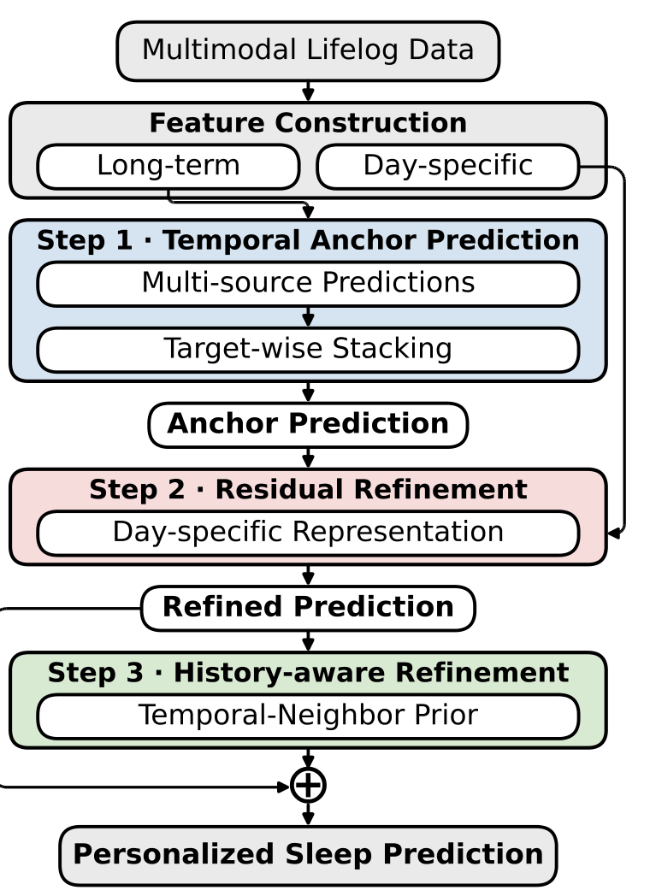
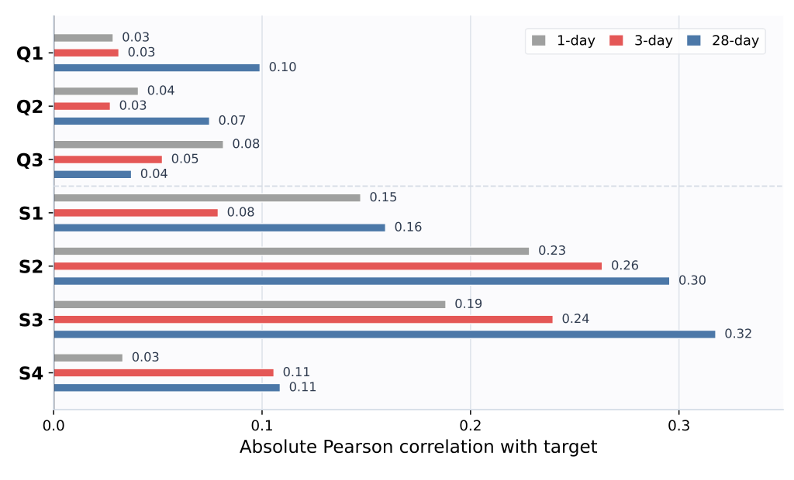
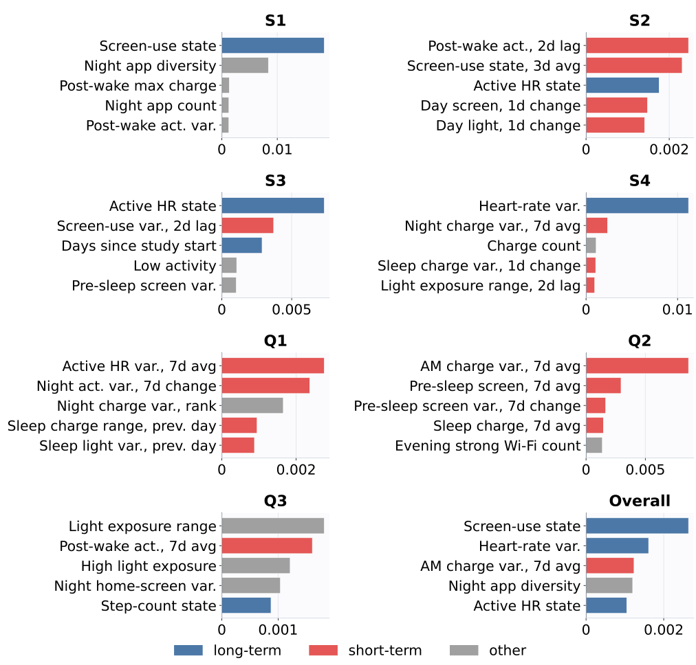

Personalized temporal anchor
Construct a target-specific baseline from accumulated personal history, calendar patterns, and long-term sensor states. Combine out-of-fold prediction sources with target-wise stacking.
Department of Computer Science, Korea University
* Equal contribution
ICTC 2026
Existing lifelog-based sleep prediction methods use multimodal smartphone and wearable data for daily sleep prediction but mainly rely on daily observations or short-term statistics, limiting their ability to capture long-term states. Furthermore, they often encode long-term states and day-specific variations in a single representation, making it difficult to distinguish their respective effects on sleep outcomes. To address these limitations, we propose SOLAR, a stepwise anchor-and-refine framework. We first construct long-term personalized features from accumulated behavioral history to capture each individual's long-term states. The framework then generates target-specific anchors and refines them using day-specific sensor states, variations from personal long-term states, and temporal-neighbor history. Experimental results show that SOLAR outperforms other baseline methods.
Separate what is typical for a person from what changed on a particular day.

Construct a target-specific baseline from accumulated personal history, calendar patterns, and long-term sensor states. Combine out-of-fold prediction sources with target-wise stacking.
Predict the variation left unexplained by the anchor using current sensor observations and deviations from the individual's usual state. A controlled residual update preserves personal context.
Use temporal-neighbor information from the same participant. Apply refinement separately for each target when it improves validation performance.
1–7 day recent statistics
14–28 day statistics, cumulative and same-weekday patterns
Deviation from the person's baseline and short–long contrasts
Q1 Overall sleep quality
Q2 Physical fatigue
Q3 Stress level
S1 Total sleep time
S2 Sleep efficiency
S3 Sleep onset latency
S4 Wake after sleep onset
Each target is a binary probability. Evaluation uses average Log-Loss across all seven targets.
SOLAR achieves the lowest average Log-Loss among the compared methods.
| Model | Test ↓ |
|---|---|
| CatBoost | 0.6053 |
| LightGBM | 0.6316 |
| XGBoost | 0.6985 |
| SCH CSM (CatBoost–LightGBM) | 0.6017 |
| SOLAR (ours) | 0.5560 |
| Configuration | OOF ↓ | Test ↓ |
|---|---|---|
| Without Steps 2 + 3 | 0.5815 | 0.5642 |
| Without Step 3 | 0.5807 | 0.5626 |
| Without long-term features | 0.5818 | 0.5739 |
| Full SOLAR | 0.5760 | 0.5560 |
Scores are reported in the accompanying paper. OOF denotes out-of-fold validation; test scores are evaluated through the online submission system.
Accumulated personal patterns complement recent observations, especially for objective sleep indicators.

Longer history captures signals that daily observations miss. For sleep onset latency (S3), absolute correlation with heart rate increases from 0.19 → 0.24 → 0.32 across 1-day, 3-day, and 28-day windows.
The effect varies across targets: longer history is not consistently better for every outcome.

SHAP analysis shows higher attribution per long-term feature across all four objective targets (S1–S4). Short-term features still account for a larger total contribution, in part because there are many more of them.
LIME provides a complementary view: long-term state features appear among the most salient individual features for several targets.
Read the complete analysis in the paper →From raw lifelog data to seven calibrated sleep probabilities.
Method, experiments, ablations, and feature analysis.
PDF · ENGLISHSOLAR presentation slides for ICTC 2026.
PDF · 한국어모델 구조, 특징 구성, 학습 및 실행 방법을 정리한 제출 보고서.
MARKDOWN · 한국어구현 상세, 실험 결과, 개발 환경 및 의존성 버전.
git clone https://github.com/chanho12/etri_solar.git
cd etri_solar/code
# Place the official challenge inputs in code/data/.
./setup_conda.sh
./run_solar.shRequires a 64-bit Linux environment with Conda. Raw challenge data must be obtained separately. The final output is data/submissions/submission_final.csv.